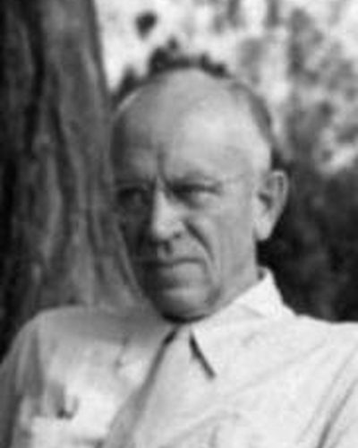

Ideologies / Green
What is Conservationism (Land Ethic)?
Conservationism (Land Ethic) is a political ideology in the Green family. Published a year after Leopold's death. Its closing essay proposes a land ethic that widens the boundary of the moral community to include soils, waters, plants and animals. An action is right when it tends to preserve the integrity, stability and beauty of that community, and wrong when it tends otherwise. Conservation based only on economic self interest fails, because most members of the land community have no market value. Leopold placed the main duty on private landowners and on an ecological conscience, not on government alone.
Humans as plain members of the land community, not its conquerors.
Defined from: Aldo Leopold, A Sand County Almanac (1949)
See how close you are to Conservationism (Land Ethic) Dare a friend to answer as one

.jpg){kind=link}
Where Conservationism (Land Ethic) stands on 13 axes
Each axis runs from 0 to 100. A score of 50 is the middle. On a classic compass it sits in the Libertarian Right quadrant.
| Axis | Position | Score | In words |
|---|---|---|---|
| EconomyMarket to Planned | 40 | Leans Market | |
| OwnershipPrivate to Collective | 35 | Leans Private | |
| RightsLiberty to Security | 35 | Leans Liberty | |
| GovernmentDemocracy to Autocracy | 20 | Strongly Democracy | |
| StructureDecentralised to Centralised | 25 | Strongly Decentralised | |
| NationInternationalist to Nationalist | 40 | Leans Internationalist | |
| ImmigrationMulticulturalist to Assimilationist | 45 | Balanced | |
| ValuesProgressive to Traditional | 60 | Leans Traditional | |
| TechnologyAccelerationist to Precautionary | 70 | Strongly Precautionary | |
| EnvironmentIndustrialist to Environmentalist | 90 | Very strongly Environmentalist | |
| ReligionSecular to Religious | 25 | Strongly Secular | |
| MilitaryPacifist to Militarist | 20 | Strongly Pacifist | |
| TradeFree Trade to Protectionist | 50 | Balanced |
Ideologies closest to Conservationism (Land Ethic)
- Nouvelle Droite (European New Right)82% alike
- Steady State Economics82% alike
- Communitarianism81% alike
- Agrarianism81% alike
- Neo Luddism81% alike
Its opposite on this map is Juche, at 27%.
Parties near Conservationism (Land Ethic)
- KomeitoJapan. Platform (1994)87% alike
- Constitutional Democratic Party of JapanJapan. Party Platform (2020)82% alike
- Five Star MovementItaly. Dalla parte giusta (2022)81% alike
- Values PartyNew Zealand. Blueprint for New Zealand (1972)80% alike
Common questions
What is Conservationism (Land Ethic)?
Conservationism (Land Ethic) is a political ideology in the Green family. Published a year after Leopold's death. Its closing essay proposes a land ethic that widens the boundary of the moral community to include soils, waters, plants and animals. An action is right when it tends to preserve the integrity, stability and beauty of that community, and wrong when it tends otherwise. Conservation based only on economic self interest fails, because most members of the land community have no market value. Leopold placed the main duty on private landowners and on an ecological conscience, not on government alone.
What does Conservationism (Land Ethic) believe?
In one line: Humans as plain members of the land community, not its conquerors. Its strongest positions are Environmentalist, Democracy, Pacifist. Published a year after Leopold's death. Its closing essay proposes a land ethic that widens the boundary of the moral community to include soils, waters, plants and animals. An action is right when it tends to preserve the integrity, stability and beauty of that community, and wrong when it tends otherwise. Conservation based only on economic self interest fails, because most members of the land community have no market value. Leopold placed the main duty on private landowners and on an ecological conscience, not on government alone.
Who founded Conservationism (Land Ethic)?
Conservationism (Land Ethic) is defined here from A Sand County Almanac (1949) by Aldo Leopold. The thinker most tied to it is Aldo Leopold (1887 to 1948).
Is Conservationism (Land Ethic) left wing or right wing?
On a classic two axis compass Conservationism (Land Ethic) falls in the Libertarian Right quadrant, which means the economic right and the libertarian side. Left and right hide a lot, though, which is why EthosScales scores it on thirteen separate axes.
How is Conservationism (Land Ethic) different from Nouvelle Droite (European New Right)?
They are close: 82% alike. The biggest gaps are on Military, where Conservationism (Land Ethic) scores 20 and Nouvelle Droite (European New Right) scores 50, and Economy, where Conservationism (Land Ethic) scores 40 and Nouvelle Droite (European New Right) scores 55. On each axis, 0 is one end and 100 is the other.
Think this is wrong? Suggest a correction. The scores are editorial estimates.